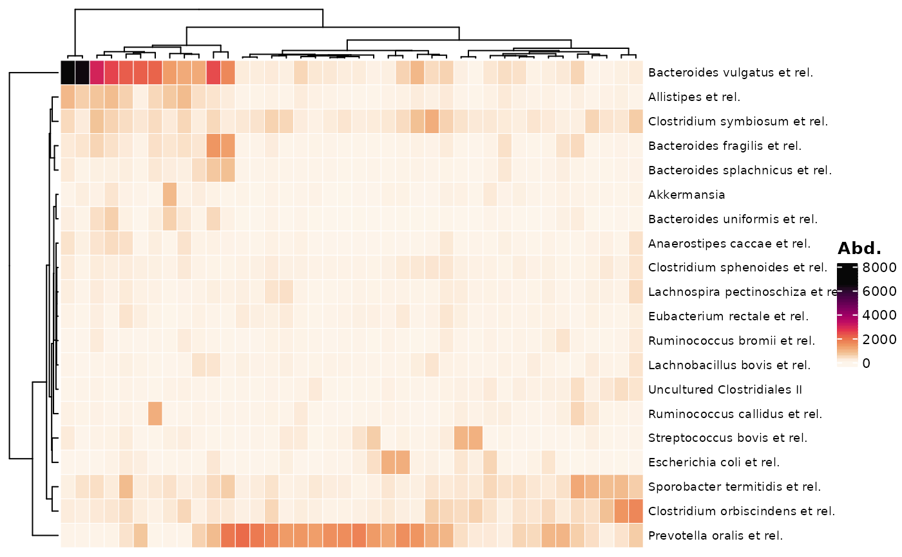
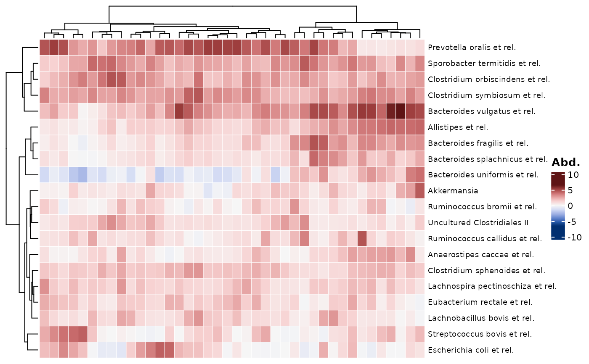
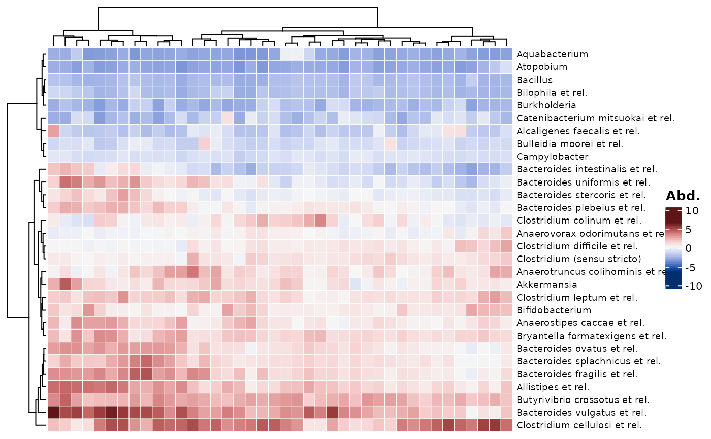
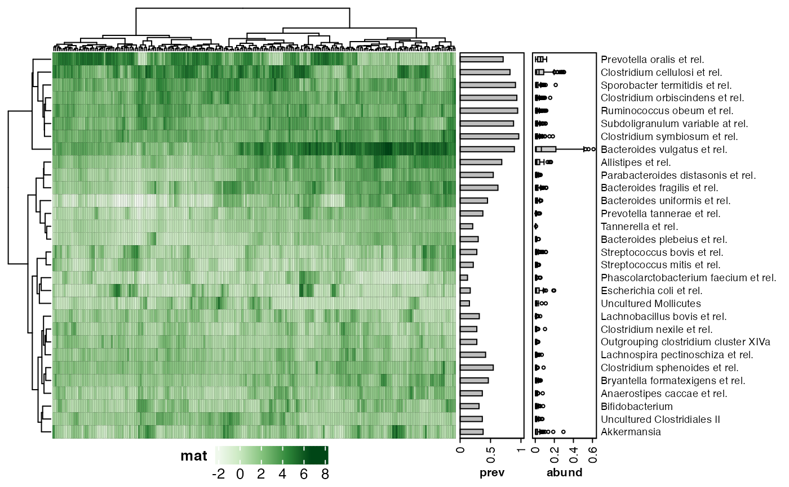
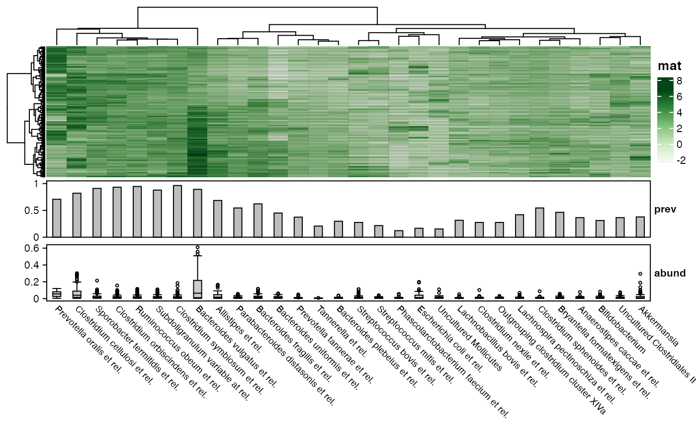
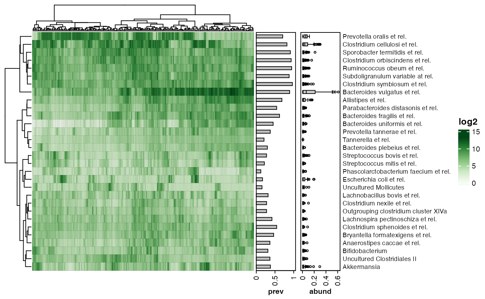

Heatmap made with ComplexHeatmap, with optional (but default) annotation of taxa prevalence and abundance.
Transform your data with tax_transform prior to plotting (and/or scale with tax_scale). Plotting "compositional" data can give an idea of the dominant taxa in each sample. Plotting some form of log or clr transformed (or scaled) microbial features can highlight other patterns. The transformed data will be ordered via your selected seriation methods and distances. Any cell numbers printed can be set to different values, and do not affect ordering.
comp_heatmap( data, taxa = phyloseq::taxa_names(ps_get(data)), samples = phyloseq::sample_names(ps_get(data)), anno_tax = NULL, anno_samples = NULL, colors = heat_palette(palette = "Greens", rev = TRUE), numbers = NULL, taxa_side = "right", seriation_method = "OLO_ward", seriation_dist = "euclidean", seriation_method_col = seriation_method, seriation_dist_col = seriation_dist, tax_transform_numbers = "identity", tax_scale_numbers = "neither", gridlines = heat_grid(lwd = 0.1, col = "black"), name = "mat", ... )
Arguments
| data | phyloseq extra output of tax_transform or tax_agg |
|---|---|
| taxa | list of taxa to include (selection occurs AFTER any tax_transform and scaling) |
| samples | list of taxa to include (selection occurs AFTER any tax_transform and scaling) |
| anno_tax | NULL or tax_anno() list output |
| anno_samples | NULL only support so far TODO |
| colors | output of heat_palette() to set heatmap fill color scheme |
| numbers | NULL or output of heat_numbers() to draw numbers on heatmap cells |
| taxa_side | controls heatmap orientation and where any anno_tax annotations are placed (top/bottom/left/right) |
| seriation_method | method to order the rows (in seriation::seriate) |
| seriation_dist | distance to use in seriation_method (if needed) |
| seriation_method_col | method to order the columns (in seriation::seriate) |
| seriation_dist_col | distance to use in seriation_method_col (if needed) |
| tax_transform_numbers | transformation applied to otu_table used only for any numbers printed |
| tax_scale_numbers | scaling applied to numbers otu_table after transformation |
| gridlines | list output of heat_grid() for setting gridline style |
| name | used as legend title (colourbar) |
| ... | extra args, passed to viz_heatmap internal function |
Examples
data("dietswap", package = "microbiome") psq <- tax_filter(dietswap, min_prevalence = 1 / 10, min_sample_abundance = 1 / 10) #> Proportional min_prevalence given: 0.1 --> min 23/222 samples. psq <- tax_agg(psq, "Genus") set.seed(123) taxa <- sample(microbiome::top_taxa(ps_get(psq))[1:50], size = 30) p <- psq %>% tax_transform("clr") %>% comp_heatmap(taxa = taxa, anno_tax = tax_anno(undetected = 50)) p  # set the colour range yourself psq %>% tax_transform("clr") %>% comp_heatmap( taxa = taxa, anno_tax = tax_anno(undetected = 50), colors = heat_palette(palette = "Greens", rev = TRUE, range = 0:10) )  psq %>% tax_transform("clr") %>% comp_heatmap( taxa = taxa, anno_tax = tax_anno(undetected = 50), colors = heat_palette(palette = "Green-Orange", range = 0:5, sym = TRUE) )  # supply a different colour palette to heat_palette (match breaks to length) psq %>% tax_transform("clr") %>% comp_heatmap( taxa = taxa, anno_tax = tax_anno(undetected = 50), colors = heat_palette(palette = viridisLite::turbo(12), breaks = 12) )  # you can place the legend at the bottom, but it is a little complicated p <- psq %>% tax_transform("clr") %>% comp_heatmap( taxa = taxa, anno_tax = tax_anno(undetected = 50), name = "auto", heatmap_legend_param = list(direction = "horizontal", title_position = "lefttop") ) ComplexHeatmap::draw(p, heatmap_legend_side = "bottom", adjust_annotation_extension = FALSE )  # rotate plot to have taxa as columns, annotated at the bottom p2 <- psq %>% tax_transform("clr") %>% comp_heatmap( taxa = taxa, taxa_side = "bottom", anno_tax = tax_anno(undetected = 50) ) p2# log2 transform data before plotting and automatic naming of scale psq %>% tax_transform("log2", zero_replace = 1) %>% comp_heatmap(taxa, anno_tax = tax_anno(undetected = 50), name = "auto") 